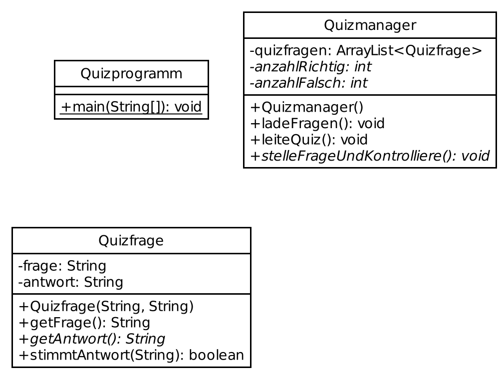

14th Java Lesson (Java Course @ TUD)
https://github.com/Trivo25/tud-java-course
February 3, 2022
Während Ihr darauf wartet, dass es beginnt..
- überprüfen wir Euren getestet-Status
- könnt ihr nochmal die Folien aus der letzten Stunde anschauen
- hier verlinkt: https://trivo25.github.io/tud-java-course/
- VS Code oder https://www.jdoodle.com/online-java-compiler/ öffnen
- die Cheat Sheet öffnen: http://tiny.cc/java-cs
Java
Objektorientierte Programmierung
Florian Kluge, Moritz Schulz
- Februar 2022
Florian.Kluge@mailbox.tu-dresden.de
Moritz.Schulz2@mailbox.tu-dresden.de
Was wir heute machen
Projekt, Teil 2/2: Quizanwendung mit REST-Client
- Klassendiagramm umsetzen
- REST-API anbinden
Contact
Florian Kluge
Florian.Kluge@mailbox.tu-dresden.de
Moritz Schulz
Moritz.Schulz2@mailbox.tu-dresden.de
Kurze Info zum Kurs
- praktische Aufgaben- und Beispiel-basierte Lernweise
- wir laufen herum und gucken, dass ihr zurecht kommt
- bitte, fragt gern, jederzeit
- auch per E-Mail / via Kursseite
- uns geht es darum, alle mitzunehmen
Stay up to date
- die E-Mails der TUD regelmäßig überprüfen
- z.B. Bekanntgabe der Veröffentlichung der Folien
- auf der Seite des Programmierkurses
- z.B. Bekanntgabe der Veröffentlichung der Folien
Projektidee
- Quizanwendung
- stellt Fragen in der Konsole
- überprüft Eingaben des Nutzers
- heute: Klassenmodell
- heute: später erweitern mit Netzwerkanfragen
- das heißt: die Fragen und Antworten kommen von einem Server via Internet
Klassenmodell
- zur Erweiterbarkeit, Austausch von Komponenten und bestimmen Funktionalitäten
- Legende zum Diagram
- kursiv: optional
- unterstrichen:
static
ladeFragen()fülltquizfragen- die Methode trägt in
quizfragenmehrereQuizfrage-Objekte ein - siehe Stunde 11 mit ArrayLists: Beispielcode
- nutzt dazu Konstruktor
Quizfrage(String, String)
- die Methode trägt in
leiteQuiz()stellt alle Quizfragen- bekommt Frage mit
Quizfrage.getFrage() - kontrolliert Antwort mit
Quizfrage.stimmtAntwort()
- bekommt Frage mit
main(String[] args)erstellt einQuizmanager-Objekt und ruft die beiden Funktionen auf

Projektidee
- Quizanwendung
- stellt Fragen in der Konsole
- überprüft Eingaben des Nutzers
- fertig: Klassenmodell
- jetzt: später erweitern mit Netzwerkanfragen
- das heißt: die Fragen und Antworten kommen von einem Server via Internet
kurze Einführung in APIs und HTTP-Requests
Was ist eine API?
- eine API ermöglicht uns, mit anderen Modulen / Programmen (egal ob Server oder lokal) zu kommunizieren
- ihr habt bereits mit einer API gearbeitet
REST(ful) APIs
Was ist eine REST-API?
- eine REST-API ist ein Weg, um mit einem (Web)Server zu kommunizieren
- wenn ihr eine Website öffnet wird ebenfalls ein
requestan den Server gestellt - der Server antwortet dann mit einer
response - das ganze passiert über HTTP(s)
REST(ful) APIs

REST(ful) APIs
- Funktion:
- wir stellen
requestsan den Server - der Server antwortet mit einer
response
- wir stellen
- Wir können so dem Server sagen was er machen soll
REST(ful) APIs
- ein API Aufruf beinhaltet immer eine
- IP/Hostname/Domain
- und einen Endpoint (Pfad)
- der Endpoint spezifiziert unsere Aktion
- zusammen mit Protokoll = URL
- eg.
google.com/search- sagt Google, dass es suchen soll
REST(ful) APIs
- in unserem Beispiel sieht das so aus
- IP: 144.76.106.99:8081
- Endpoints:
/questions- Der Server antwortet euch mit allen Fragen/createNew- Ihr erstellt einen neuen Account/verify- Ihr könnt eure Antworten verifizieren
REST(ful) APIs
ein Template findet ihr hier:
https://github.com/Trivo25/java-tud-rest-api/blob/main/java_template/QuizService.java
REST(ful) APIs
- das Template gibt euch folgende overloaded Funktion:
void sendRequest(String url, HashMap<String, String> payload); // mit "payload"void sendRequest(String url); // ohne "payload"
REST(ful) APIs
Erstellung eines Accounts auf dem Leaderboard
Ressourcenempfelungen
- JAVA for Everyone: Cay S. Horstmann
- z.B. in SLUB
- O’Reilly-Bücher zu Java
- https://www.oreilly.com/library/view/temporary-access/
- Zugang per SLUB-Account